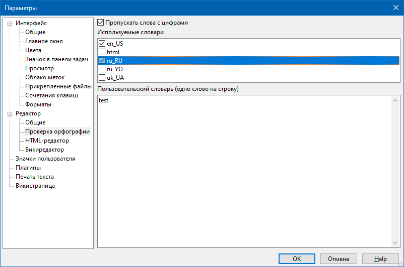

Редактор - проверка орфографии

В данном разделе можно выбрать, какие словари будут использоваться для проверки орфографии при вводе текста.
Словари, которые использует программа OutWiker для проверки орфографии расположены в папке spell внутри папки программы, а также в папке spell внутри папки настроек, т.е. в Windows 7 / 10 это C:\Users\USERNAME\AppData\Roaming\outwiker\spell, а в Linux - ~/.config/outwiker/spell (или в другом месте в зависимости от настроек системы).
В этом же разделе можно увидеть и при необходимости отредактировать пользовательский словарь, куда добавляются слова, не вошедшие во встроенные словари.